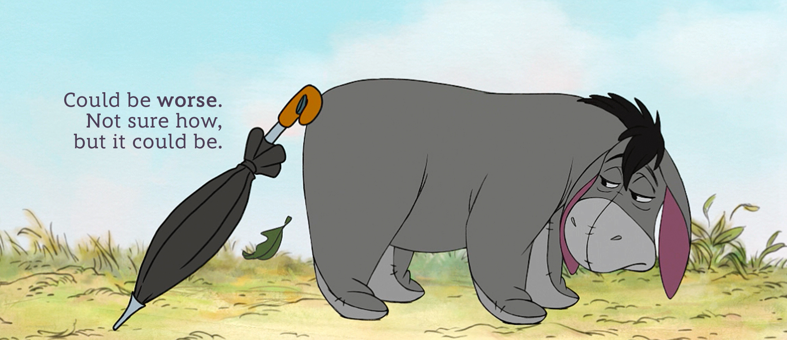

Eeyore is a donkey and for some he is their favourite Pooh character amongst all the others. He is a blue-gray donkey, about 3-years in age and stands 18 inches tall & 27 inches in length. He is originally like the other Pooh character; stuffed with sawdust. His appearance is highlighted by a small light pink bow on his tail. He is an intelligent animal but tends to keep to himself. Eeyore is a extremely gloomy donkey and has a very bad habit of losing his tail! Mostly, he tends to depend on his friends to find his lost tail for him and thereafter Christopher Robin fixes his tail using a drawing pin. What he simply adores is that his friends remember him on his birthday and celebrates it with him. He often says "Thanks for noticin' me" and "Oh, well".
